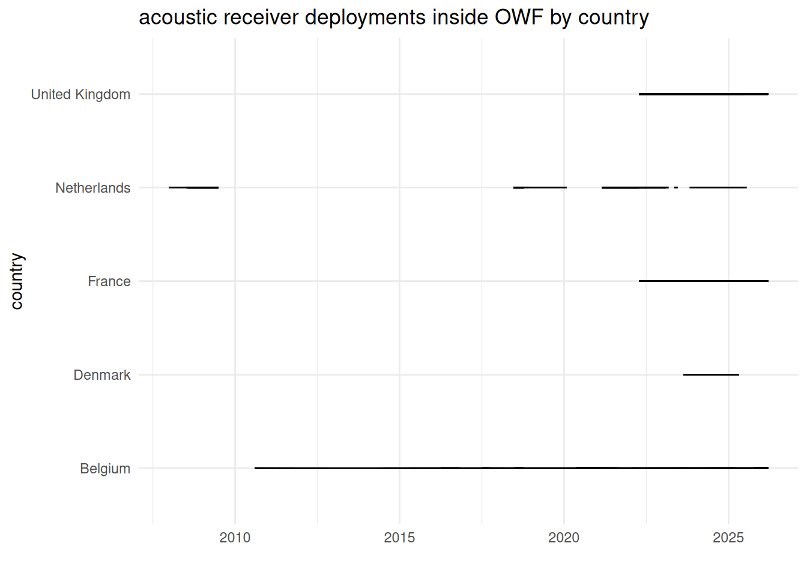
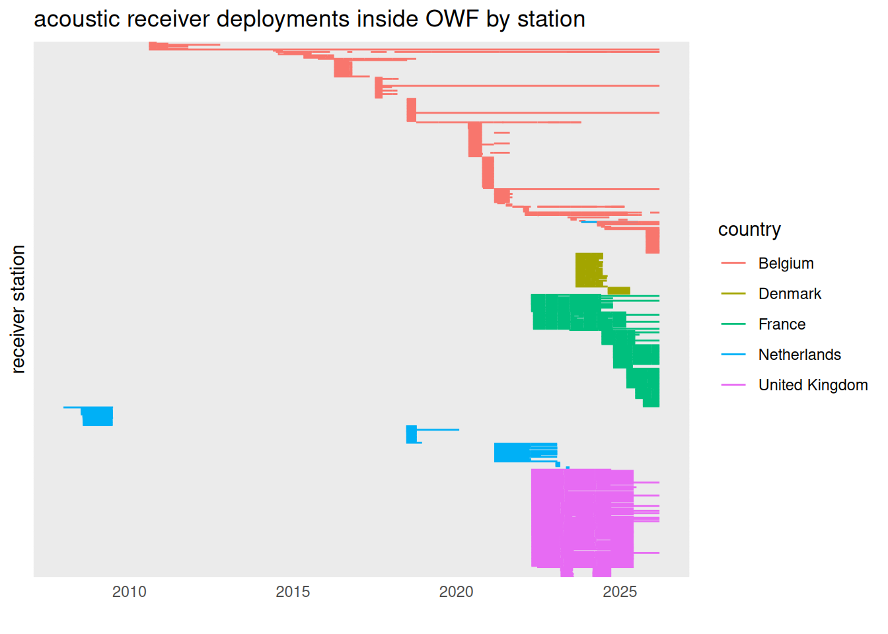
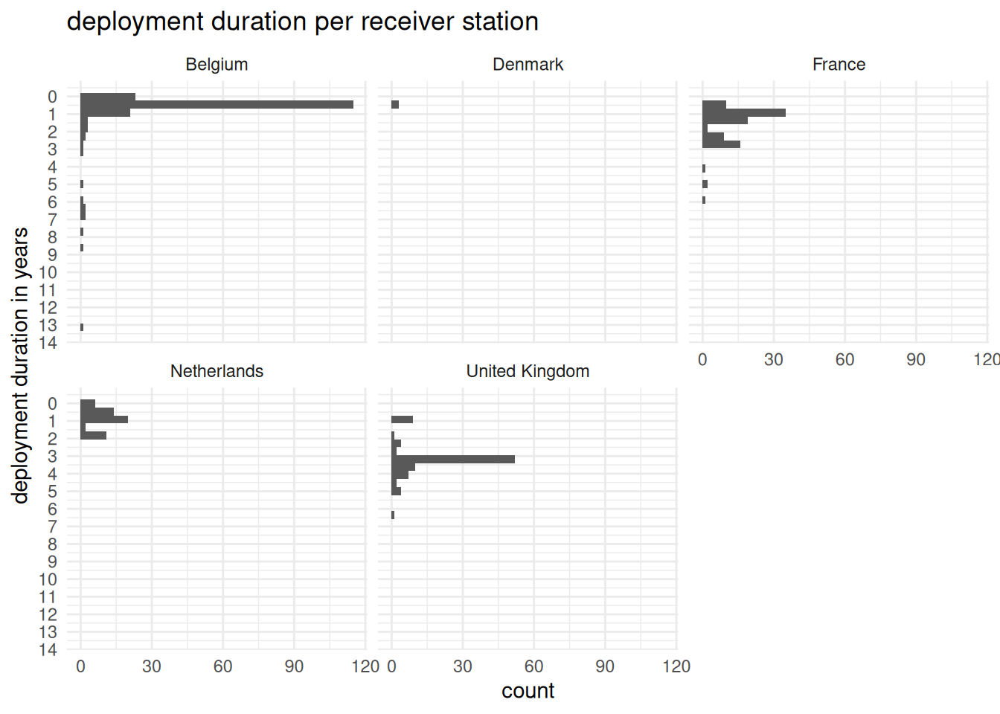
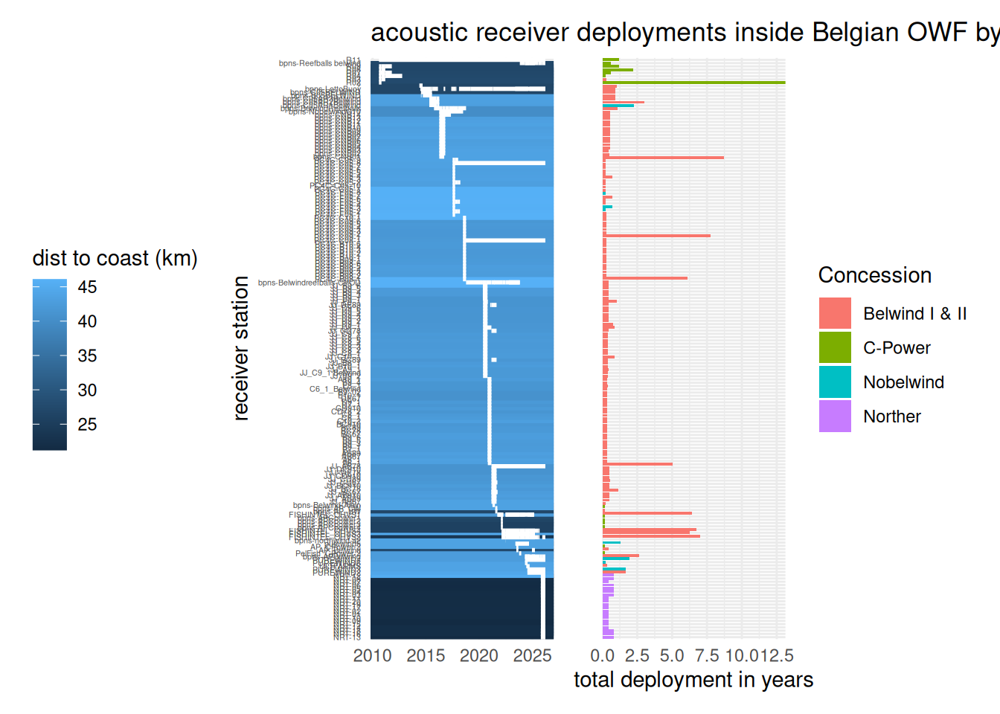
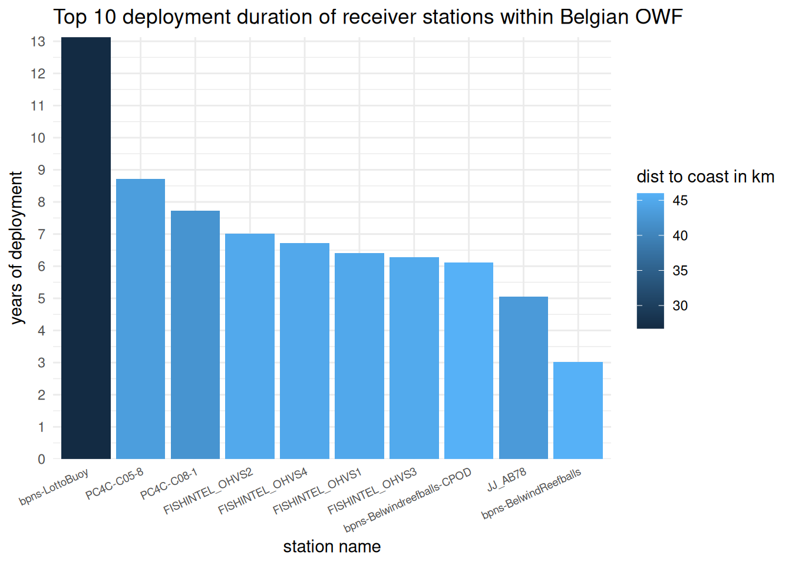
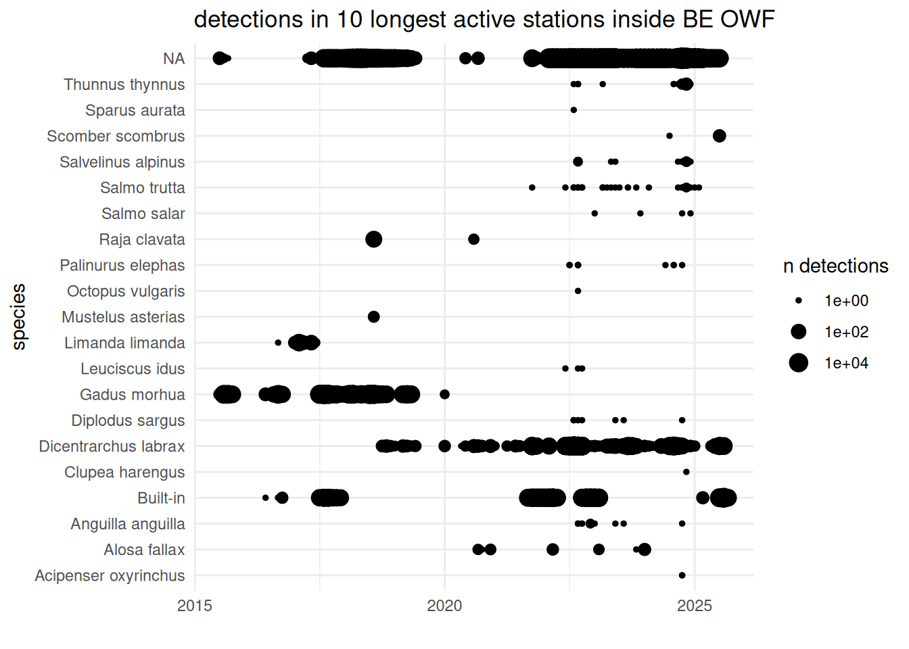
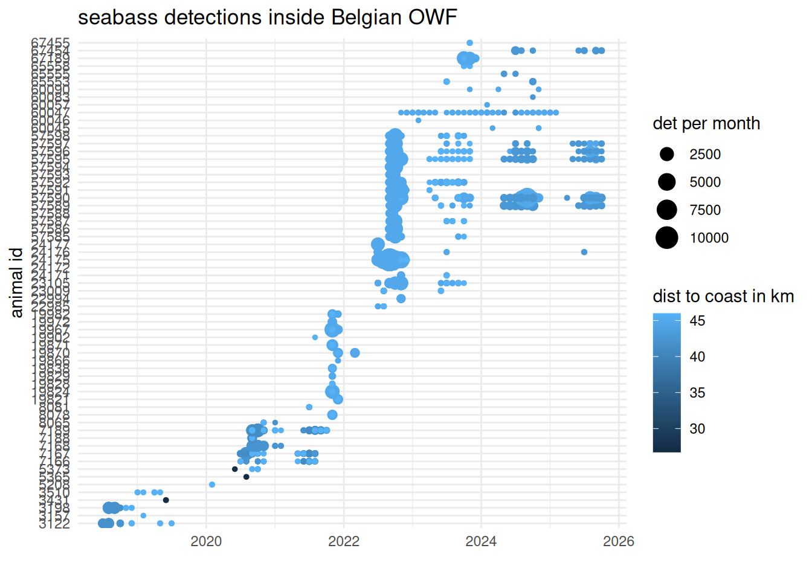
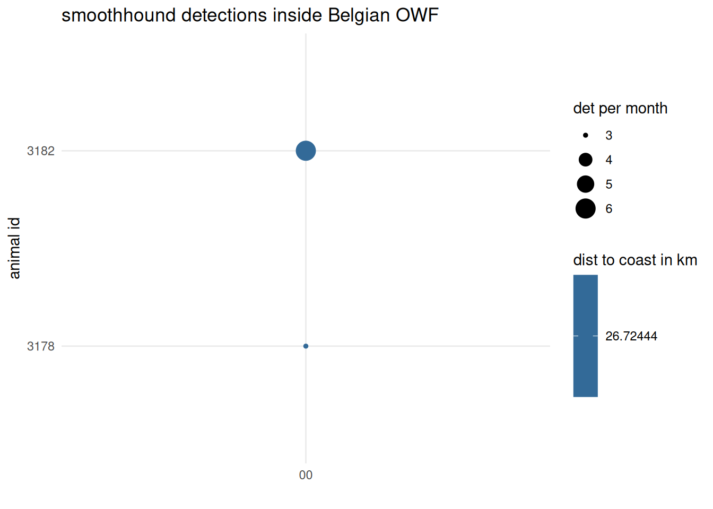
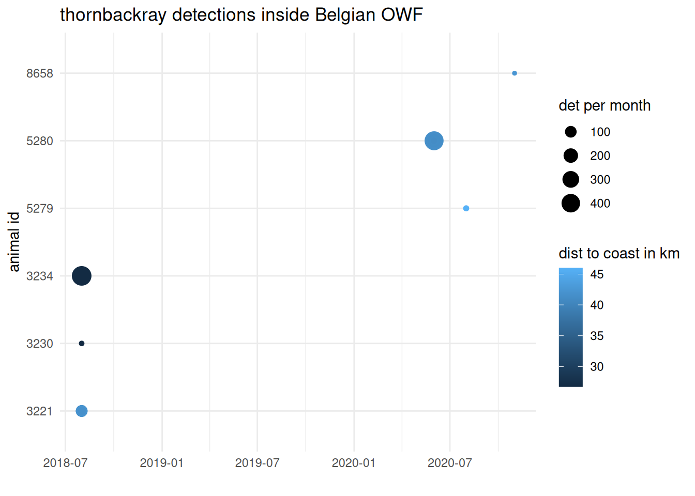
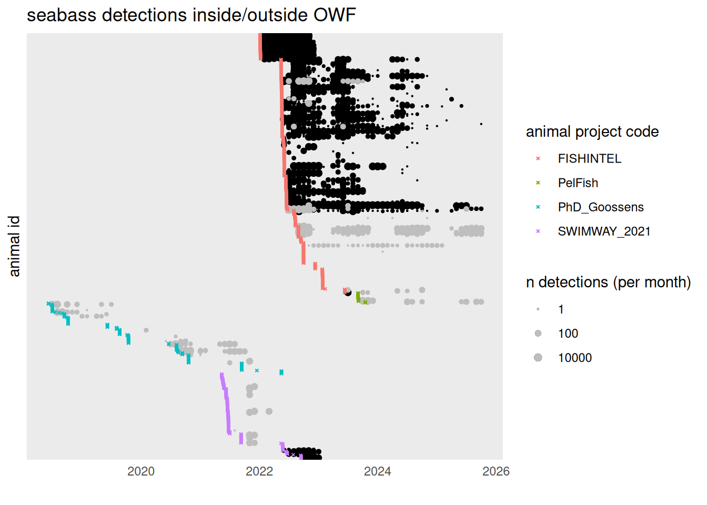

# 0. data access
# install.packages("pak")
# library(pak)
# pak::pak("inbo/etn")
library(etn)
# library(DBI)
# library(RPostgreSQL)
# 1. data wrangling
library(dplyr)
library(purrr)
library(tidyr)
# library(glue)
library(forcats)
# library(magrittr)
# 2. spatiotemporal
library(lubridate)
library(sf)
# 3. visualisations
library(ggplot2)
library(plotly)
library(leaflet)
library(patchwork)
library(mapview)
# 4. analyses
# library(mgcv)
# 5. misc
library(knitr)
library(here)Data exploration of European Tracking Network data inside European Offshore Wind Farms
TODO: - check with moratorium data -> how to present? - put the exact concession zone for deployments
Setup
workspace
R packages
working directory
# Set working directory to project root
opts_knit$set(root.dir = here::here())Loading functions
source("R/helpers.R")
source("R/get_acoustic_detections.R")
source("R/utils_etn.R")Setting paths
path_spatial <- "data/spatial"
path_data_raw <- "data_raw"
path_data_raw_etn <- "data_raw/etn"
path_data <- "data"
path_plots <- "docs/plots"Loading data
load_files_to_env(path = path_spatial, file_ext = "gpkg")Reading layer `BENL' from data source
`/home/onyxia/work/chapter1_owf_spaceuse/data/spatial/BENL.gpkg'
using driver `GPKG'
Simple feature collection with 2 features and 14 fields
Geometry type: MULTIPOLYGON
Dimension: XY
Bounding box: xmin: 2.546263 ymin: 49.49607 xmax: 7.226894 ymax: 53.55444
Geodetic CRS: WGS 84
Reading layer `BPNS' from data source
`/home/onyxia/work/chapter1_owf_spaceuse/data/spatial/BPNS.gpkg'
using driver `GPKG'
Simple feature collection with 1 feature and 14 fields
Geometry type: MULTIPOLYGON
Dimension: XY
Bounding box: xmin: 2.238333 ymin: 51.03976 xmax: 4.402039 ymax: 51.87611
Geodetic CRS: WGS 84
Multiple layers are present in data source /home/onyxia/work/chapter1_owf_spaceuse/data/spatial/concession_zones_BE.gpkg, reading layer `concession_zones'.
Use `st_layers' to list all layer names and their type in a data source.
Set the `layer' argument in `st_read' to read a particular layer.Warning in CPL_read_ogr(dsn, layer, query, as.character(options), quiet, :
automatically selected the first layer in a data source containing more than
one.Reading layer `concession_zones' from data source
`/home/onyxia/work/chapter1_owf_spaceuse/data/spatial/concession_zones_BE.gpkg'
using driver `GPKG'
Simple feature collection with 9 features and 2 fields
Geometry type: MULTIPOLYGON
Dimension: XY
Bounding box: xmin: 479616 ymin: 5704261 xmax: 505792.8 ymax: 5732140
Projected CRS: WGS 84 / UTM zone 31N
Reading layer `export_cables' from data source
`/home/onyxia/work/chapter1_owf_spaceuse/data/spatial/export_cables.gpkg'
using driver `GPKG'
Simple feature collection with 13 features and 3 fields
Geometry type: LINESTRING
Dimension: XY
Bounding box: xmin: 480054.7 ymin: 5676812 xmax: 512253.8 ymax: 5729048
Projected CRS: WGS 84 / UTM zone 31N
Reading layer `infield_cables' from data source
`/home/onyxia/work/chapter1_owf_spaceuse/data/spatial/infield_cables.gpkg'
using driver `GPKG'
Simple feature collection with 219 features and 2 fields
Geometry type: MULTILINESTRING
Dimension: XY
Bounding box: xmin: 479698 ymin: 5704324 xmax: 505502.8 ymax: 5731997
Projected CRS: WGS 84 / UTM zone 31N
Reading layer `shipwrecks' from data source
`/home/onyxia/work/chapter1_owf_spaceuse/data/spatial/shipwrecks.gpkg'
using driver `GPKG'
Simple feature collection with 312 features and 5 fields
Geometry type: POINT
Dimension: XY
Bounding box: xmin: 2.305343 ymin: 51.11496 xmax: 3.331701 ymax: 51.84799
Geodetic CRS: WGS 84
Reading layer `Substations' from data source
`/home/onyxia/work/chapter1_owf_spaceuse/data/spatial/Substations.gpkg'
using driver `GPKG'
Simple feature collection with 10 features and 8 fields
Geometry type: POINT
Dimension: XY
Bounding box: xmin: 480922.2 ymin: 5706927 xmax: 499405.6 ymax: 5729054
Projected CRS: WGS 84 / UTM zone 31N
Reading layer `windfarms_points_BE' from data source
`/home/onyxia/work/chapter1_owf_spaceuse/data/spatial/windfarms_points_BE.gpkg'
using driver `GPKG'
Simple feature collection with 397 features and 7 fields
Geometry type: POINT
Dimension: XY
Bounding box: xmin: 479703.9 ymin: 5704363 xmax: 505502.8 ymax: 5731999
Projected CRS: WGS 84 / UTM zone 31N
Reading layer `windfarms_points' from data source
`/home/onyxia/work/chapter1_owf_spaceuse/data/spatial/windfarms_points.gpkg'
using driver `GPKG'
Simple feature collection with 438 features and 10 fields
Geometry type: POINT
Dimension: XY
Bounding box: xmin: -18.08 ymin: 27.65 xmax: 29.75 ymax: 65.668
Geodetic CRS: WGS 84
Reading layer `windfarms_polygons' from data source
`/home/onyxia/work/chapter1_owf_spaceuse/data/spatial/windfarms_polygons.gpkg'
using driver `GPKG'
Simple feature collection with 600 features and 13 fields
Geometry type: MULTIPOLYGON
Dimension: XY
Bounding box: xmin: -16.58968 ymin: 27.73303 xmax: 24.73779 ymax: 65.47056
Geodetic CRS: WGS 84Loaded 10 object(s): BENL, BPNS, concession_zones_BE, export_cables, infield_cables, shipwrecks, Substations, windfarms_points_BE, windfarms_points, windfarms_polygonsload_files_to_env(path = path_data_raw_etn, file_ext = "rds")Loaded 8 object(s): animals_seabass_raw, animals_seabass, detections_BE_OWF_catshark, detections_BE_OWF_mackerel, detections_BE_OWF_seabass, detections_BE_OWF_smoothhound, detections_BE_OWF_thornbackray, detections_progressload_files_to_env(path = path_data, file_ext = "rds")Loaded 12 object(s): animals_anim_proj, animals_seabass, deployment_stations_BE_OWF, deployments_station_sum, deployments, detections_BE_OWF_10longestdeployments_sum_animal, detections_BE_OWF_10longestdeployments_sum, detections_BE_OWF_seabass_sum, detections_BE_OWF_smoothhound_sum, detections_BE_OWF_thornbackray_sum, detections_seabass_sum, etn_anim_proj_key# knitr::knit_exit()spatial OWF data
# fix owf polygons
## TODO: put into spatial data script
windfarms_polygons <- windfarms_polygons %>% sf::st_make_valid()
windfarms_polygons_union <-
windfarms_polygons %>%
group_by(country) %>%
summarise(geom = st_union(geom))
windfarms_polygons_prod <-
windfarms_polygons %>%
dplyr::filter(status == 'Production')
# knitr::knit_exit()
mapview(windfarms_polygons_union) + windfarms_polygons_prodETN data
# connect to the etn postgres db
# pgdrv <- dbDriver(drvName = "PostgreSQL")
# con_ETNdb <-DBI::dbConnect(pgdrv,
# dbname="ETN",
# host="pgetn.vliz.be",
# port=5432,
# user = Sys.getenv("ETN_USER"),
# password = Sys.getenv("ETN_PWD"))
# # troubleshoooting - probably an IP whitelisting issuedeployments of acoustic receivers
# # get unique deployment ids
# deployment_ids_owf <-
# deployments %>%
# dplyr::filter(inside_OWF == TRUE) %>%
# dplyr::select(deployment_id, deploy_date_time, recover_date_time, country) %>%
# sf::st_drop_geometry() %>%
# unique()
# deployment_stations_BE_OWF_slice1 <-
# deployment_stations_BE_OWF %>%
# dplyr::filter(deploy_duration_total > median_deploy_duration) %>%
# dplyr::select(station_name)
#
# deployment_stations_BE_OWF %>% st_drop_geometry() %>% slice_max(n = 5, order_by = deploy_duration_total) %>% dplyr::select(station_name) %>% pull() -> station_nameslet’s see when and were the OWF deployments were
plot_deployments_owf_country <-
ggplot(data = deployments %>% dplyr::filter(inside_OWF == TRUE)) +
geom_segment(aes(x = deploy_date_time, y = country, xend = recover_date_time)) +
labs(title = "acoustic receiver deployments inside OWF by country", x = "", y = "country") +
theme_minimal()
plot_deployments_owf_country
save_plot(plot_deployments_owf_country, folder = path_plots)
plot_deployments_owf_station <-
ggplot(data = deployments %>%
dplyr::filter(inside_OWF == TRUE & !grepl(",", country)) %>%
mutate(
# This creates a factor where levels are sorted by Country, then Station
station_ordered = factor(station_name,
levels = rev(unique(station_name[order(country, deploy_date_time)])))
)) +
geom_segment(aes(x = deploy_date_time,
y = station_ordered, # <-- Changed from station_name to station_ordered
xend = recover_date_time,
color = country)) +
labs(title = "acoustic receiver deployments inside OWF by station",
x = "",
y = "receiver station") +
theme_minimal() +
theme(axis.text.y = element_blank())
plot_deployments_owf_station
save_plot(plot_deployments_owf_station, folder = path_plots)
plot_deployments_owf_station_hist <-
ggplot(data = deployments_station_sum %>% dplyr::filter(inside_OWF == TRUE & !grepl(",", country))) +
geom_histogram(aes(y = deploy_duration_total %>% as.numeric() / 365)) +
scale_y_reverse(n.breaks = 15) +
facet_wrap(~country) +
labs(title = "deployment duration per receiver station", y = "deployment duration in years") +
theme_minimal()
plot_deployments_owf_station_hist`stat_bin()` using `bins = 30`. Pick better value `binwidth`.
save_plot(plot_deployments_owf_station_hist, folder = path_plots)`stat_bin()` using `bins = 30`. Pick better value `binwidth`.To explore what species have been detected in BE OWF, we get all belgian OWF stations and get the acoustic detections for those.
# plot needed? doesn't seem to make much sense
## add total deploy time (in yrs)
plot_deployments_owf_station_BE <-
ggplot() +
geom_hline(data = deployment_stations_BE_OWF, aes(yintercept = fct_reorder(station_name %>% as.factor(), first_deployment, .desc = T), color = dist_to_coast_km), linewidth = 2.5) +
geom_segment(data = deployments %>% dplyr::filter(inside_OWF == TRUE, country == "Belgium"), aes(x = deploy_date_time, y = station_name, xend = recover_date_time), color = "white", linewidth = 1) +
# geom_text(data = deployment_stations_BE_OWF, aes(y = station_name, x = deployment_stations_BE_OWF$first_deployment %>% min() - days(30), label = paste((deploy_duration_total %>% as.numeric / 365) %>% round(digits = 1), "y")), color = "white") +
labs(title = "acoustic receiver deployments inside Belgian OWF by station", x = "", y = "receiver station", color = "dist to coast (km)") +
theme_minimal() +
theme(axis.text.y = element_text(size = 4),
legend.position = "left")
# plot_deployments_owf_station_BE
save_plot(plot_deployments_owf_station_BE, folder = path_plots, height = 25)
plot_deployments_owf_station_BE_hist <-
ggplot() +
geom_col(data = deployment_stations_BE_OWF, aes(y = fct_reorder(station_name %>% as.factor(), first_deployment, .desc = T), x = deploy_duration_total %>% as.numeric() / 365, fill = Concession)) +
# geom_segment(data = deployments %>% dplyr::filter(inside_OWF == TRUE, country == "Belgium"), aes(x = deploy_date_time, y = fct_reorder(station_name %>% as.factor(), deploy_date_time, .desc = T), xend = recover_date_time), color = "white", alpha = ) +
# geom_text(data = deployment_stations_BE_OWF, aes(y = station_name, x = deployment_stations_BE_OWF$first_deployment %>% min() - days(30), label = paste((deploy_duration_total %>% as.numeric / 365) %>% round(digits = 1), "y")), color = "white") +
scale_x_continuous(expand = c(0,0)) +
labs(title = "", x = "total deployment in years", y = "") +
theme_minimal() +
theme(axis.text.y = element_blank())
# plot_deployments_owf_station_BE_hist
save_plot(plot_deployments_owf_station_BE, folder = path_plots, height = 25)
plot_deployments_owf_station_BE + plot_deployments_owf_station_BE_hist
summary stats
TODO ideas: cumulative days of deployment, overall area covered, dist to coast, # of deployments
# how many unique stations are there?
deployments %>%
dplyr::filter(inside_OWF == TRUE, country == "Belgium") %>%
dplyr::select(station_name) %>%
unique() %>%
nrow() # TODO make part of the summary stats[1] 191# which receiver stations have had hydrophones deployed for the longest?
deployment_stations_BE_OWF_10max <-
deployment_stations_BE_OWF %>% st_drop_geometry() %>% slice_max(n = 10, order_by = deploy_duration_total)
deployment_stations_BE_OWF_10max %>%
dplyr::mutate(ddt_yrs = (deploy_duration_total %>% as.numeric() / 365) %>% round(digits = 2)) %>%
dplyr::select(station_name, deploy_duration_total, ddt_yrs, , dist_to_coast_km)# A tibble: 10 × 4
station_name deploy_duration_total ddt_yrs dist_to_coast_km
<chr> <drtn> <dbl> <dbl>
1 bpns-LottoBuoy 4791.198 days 13.1 26.7
2 PC4C-C05-8 3178.672 days 8.71 43.4
3 PC4C-C08-1 2822.672 days 7.73 42.1
4 FISHINTEL_OHVS2 2556.939 days 7.01 45.0
5 FISHINTEL_OHVS4 2452.211 days 6.72 44.8
6 FISHINTEL_OHVS1 2337.405 days 6.4 44.8
7 FISHINTEL_OHVS3 2292.775 days 6.28 45.0
8 bpns-Belwindreefballs-CPOD 2231.118 days 6.11 46.0
9 JJ_AB78 1847.089 days 5.06 43.0
10 bpns-BelwindReefballs 1105.438 days 3.03 46.0plot_deployments_owf_station_BE_duration <-
ggplot(data = deployment_stations_BE_OWF) +
geom_col(aes(x = fct_reorder(station_name, deploy_duration_total, .desc = TRUE),
y = (deploy_duration_total %>% as.numeric()) / 365, fill = dist_to_coast_km)) +
scale_y_continuous(n.breaks = 10, expand = c(0,0)) +
labs(title = "Total deployment duration of receiver stations within Belgian OWF", y = "years of deployment", x = "station name", fill = "dist to coast in km") +
theme_minimal() +
theme(axis.text.x = element_text(angle = 90, hjust = 1, size = 5))
# plot_deployments_owf_station_BE_duration
save_plot(plot_deployments_owf_station_BE_duration, path_plots)
plot_deployments_owf_station_BE_duration_10max <-
ggplot(data = deployment_stations_BE_OWF_10max) +
geom_col(aes(x = fct_reorder(station_name, deploy_duration_total, .desc = TRUE),
y = (deploy_duration_total %>% as.numeric()) / 365, fill = dist_to_coast_km)) +
scale_y_continuous(n.breaks = 10, expand = c(0,0)) +
labs(title = "Top 10 deployment duration of receiver stations within Belgian OWF", y = "years of deployment", x = "station name", fill = "dist to coast in km") +
theme_minimal() +
theme(axis.text.x = element_text(angle = 25, hjust = 1, size = 7))
plot_deployments_owf_station_BE_duration_10max
save_plot(plot_deployments_owf_station_BE_duration_10max, path_plots)animal projects
Let’s check for relevant animal projects
# the following keywords are considered in R/etn_data_queries.R
animal_proj_keywords <- c("elasmo","elasmobranch", "seabass", "mackerel", "OWF", "VLIZ", "shark", "ray")animals
TODO: put somewhere else (doesn’t follow the flow of thought here)
Animals tagged in projects that have one of the following keywords in their name: elasmo, elasmobranch, seabass, mackerel, OWF, VLIZ, shark, ray:
animals_anim_proj_species <-
animals_anim_proj %>%
dplyr::group_by(scientific_name) %>%
dplyr::filter(!scientific_name %in% c(NA,"Built-in")) %>%
dplyr::summarise(n_individual = dplyr::n(),
animal_proj_codes = paste0(animal_project_code %>% unique(), collapse= ", ")) %>%
dplyr::arrange(desc(n_individual))
animals_anim_proj_species %>% print(n = 50)# A tibble: 23 × 3
scientific_name n_individual animal_proj_codes
<chr> <int> <chr>
1 Scyliorhinus canicula 194 FISHOWF, FISHOWF+, sharks_vliz
2 Mustelus asterias 148 2025-28_NorthSeaNL_MONS_Elasmo, ADST-Sh…
3 Scomber scombrus 135 mackerel_dtu, mackerel_geomar, mackerel…
4 Raja undulata 98 FISHOWF, FISHOWF+, PTN/ATLAZUL/rays
5 Dicentrarchus labrax 66 2025_IJmuidenRotterdam_SeaBass, FISHOWF…
6 Raja clavata 55 FISHOWF, FISHOWF+, PTN/ATLAZUL/rays, VF…
7 Homarus gammarus 54 FISHOWF
8 Squalus acanthias 40 sharks_dtu
9 Muraena helena 19 PTN/PROTECT2013/Moray
10 Gadus morhua 18 ADST-Shark, COD_OWF, IMR_OWF_animals
11 Lamna nasus 18 FISHOWF, FISHOWF+
12 Scyliorhinus stellaris 17 FISHOWF, FISHOWF+
13 Raja brachyura 16 FISHOWF+, thornback_vliz
14 Prionace glauca 15 Bluesharks_Basque, FISHOWF, FISHOWF+
15 Spondyliosoma cantharus 12 FISHOWF+
16 Thunnus thynnus 11 FISHOWF, FISHOWF+
17 range test 10 COD_OWF_range_test
18 Galeorhinus galeus 6 2025-28_NorthSeaNL_MONS_Elasmo, FISHOWF+
19 Raja asterias 4 FISHOWF
20 Merluccius merluccius 3 FISHOWF
21 Raja montagui 3 FISHOWF+, PTN/ATLAZUL/rays
22 Dasyatis pastinaca 2 2025-28_NorthSeaNL_MONS_Elasmo
23 Tetrapturus belone 1 FISHOWF+ detections
query acoustic detections at the acoustic receiver deployments inside OWF
# tests
# test <- get_acoustic_detections2(deployment_id = 3336)
# test$scientific_name %>% unique()
# # try to run biiig query from all stations within BE OWF
# detections_OWF_BE <-
# etn::get_acoustic_detections(station_name =
# deployment_stations_BE_OWF %>%
# dplyr::filter(deploy_duration_total > median_deploy_duration) %>%
# dplyr::select(station_name))Checking the acoustic detections at the stations that have had receivers deployed the longest
detections_BE_OWF_10longestdeployments_sum_animal %>%
dplyr::ungroup() %>%
dplyr::group_by(scientific_name) %>%
dplyr::summarise(n_det = sum(n_det),
n_ind = dplyr::n(),
first_det = min(first_det) %>% as.Date(),
last_det = max(last_det) %>% as.Date()) %>%
dplyr::arrange(desc(n_det)) %>%
print(n = 50)# A tibble: 19 × 5
scientific_name n_det n_ind first_det last_det
<chr> <int> <int> <date> <date>
1 Dicentrarchus labrax 411612 61 2018-10-09 2025-08-29
2 Gadus morhua 220343 42 2015-07-31 2020-01-09
3 Limanda limanda 1331 1 2016-09-06 2017-06-02
4 Raja clavata 471 3 2018-08-08 2020-08-11
5 Thunnus thynnus 57 8 2022-08-21 2024-12-23
6 Alosa fallax 48 7 2020-09-04 2024-01-18
7 Salmo trutta 32 11 2021-10-13 2025-02-04
8 Scomber scombrus 30 3 2024-07-10 2025-07-07
9 Salvelinus alpinus 14 5 2022-09-11 2024-12-18
10 Anguilla anguilla 11 10 2022-09-01 2024-10-18
11 Palinurus elephas 10 3 2022-07-17 2024-10-04
12 Diplodus sargus 9 5 2022-08-14 2024-10-23
13 Mustelus asterias 9 2 2018-08-01 2018-08-19
14 Salmo salar 4 4 2023-01-12 2024-12-20
15 Leuciscus idus 3 1 2022-06-29 2022-10-04
16 Acipenser oxyrinchus 2 2 2024-10-05 2024-10-20
17 Clupea harengus 1 1 2024-11-10 2024-11-10
18 Octopus vulgaris 1 1 2022-09-19 2022-09-19
19 Sparus aurata 1 1 2022-08-06 2022-08-06plot_detections_BE_OWF_10longestdeployments <-
ggplot(data = detections_BE_OWF_10longestdeployments_sum) +
geom_point(aes(x = month, y = scientific_name, size = n_det)) +
scale_size(transform = "log10", range = c(1, 5)) +
labs(title = "detections in 10 longest active stations inside BE OWF", x = "", y = "species", size = "n detections") +
theme_minimal() #+
# guides(size = 'none')
plot_detections_BE_OWF_10longestdeployments
save_plot(plot_detections_BE_OWF_10longestdeployments, path_plots)abacus plots per species
plot_detections_BE_OWF_seabass <-
ggplot(data = detections_BE_OWF_seabass_sum) +
geom_point(aes(y = animal_id %>% as.factor(), x = month, color = dist_to_coast_km, size = n_det)) +
labs(x = "", title = "seabass detections inside Belgian OWF", y = "animal id", color = "dist to coast in km", size = "det per month") +
theme_minimal()
plot_detections_BE_OWF_seabass
save_plot(plot_detections_BE_OWF_seabass, folder = path_plots, height = 18)
# plot_detections_BE_OWF_seabass %>% ggplotly()
# smoothhound
plot_detections_BE_OWF_smoothhound <-
ggplot(data = detections_BE_OWF_smoothhound_sum) +
geom_point(aes(y = animal_id %>% as.factor(), x = month, color = dist_to_coast_km, size = n_det)) +
labs(x = "", title = "smoothhound detections inside Belgian OWF", y = "animal id", color = "dist to coast in km", size = "det per month") +
theme_minimal()
plot_detections_BE_OWF_smoothhound
save_plot(plot_detections_BE_OWF_smoothhound, folder = path_plots, height = 18)
# plot_detections_BE_OWF_smoothhound %>% ggplotly()
# thornbackray
plot_detections_BE_OWF_thornbackray <-
ggplot(data = detections_BE_OWF_thornbackray_sum) +
geom_point(aes(y = animal_id %>% as.factor(), x = month, color = dist_to_coast_km, size = n_det)) +
labs(x = "", title = "thornbackray detections inside Belgian OWF", y = "animal id", color = "dist to coast in km", size = "det per month") +
theme_minimal()
plot_detections_BE_OWF_thornbackray
save_plot(plot_detections_BE_OWF_thornbackray, folder = path_plots, height = 18)
# plot_detections_BE_OWF_thornbackray %>% ggplotly()Some summary statistics
Seabass has the most detections inside Belgian OWF. So let’s look a bit more in detail into those detections
seabass
plot_detections_seabass <-
ggplot() +
# animal tagging
geom_point(data = animals_seabass, aes(x = release_date_time, y = fct_reorder(animal_id %>% as.factor(), paste(animal_project_code, release_date_time, sep = "_"), .desc = T), color = animal_project_code), shape = 4, size = 0.5) +
# all etn detections (sum)
geom_point(data = detections_seabass_sum, aes(x = month, y = animal_id %>% as.factor(), size = n_det)) +
# # BE OWF detections
geom_point(data = detections_BE_OWF_seabass_sum, aes(x = month, y = animal_id %>% as.factor(), size = n_det), color = "grey") +
# animal tagging
geom_point(data = animals_seabass, aes(x = release_date_time, y = fct_reorder(animal_id %>% as.factor(), paste(animal_project_code, release_date_time, sep = "_"), .desc = T), color = animal_project_code), shape = 4, size = 0.5) +
scale_size(transform = "log10", range = c(0.1, 2)) +
labs(title = "seabass detections inside/outside OWF", y = "animal id", x = "", color = "animal project code", size = "n detections (per month)") +
theme_minimal() +
theme(axis.text.y = element_blank())
plot_detections_seabass
save_plot(plot_detections_seabass, height = 20, folder = path_plots)tests
# b <- ggplot(mtcars, aes(wt, mpg)) +
# geom_point()
#
# df <- data.frame(x1 = 2.62, x2 = 3.57, y1 = 21.0, y2 = 15.0)
# b +
# geom_curve(aes(x = x1, y = y1, xend = x2, yend = y2, colour = "curve"), data = df) +
# geom_segment(aes(x = x1, y = y1, xend = x2, yend = y2, colour = "segment"), data = df)